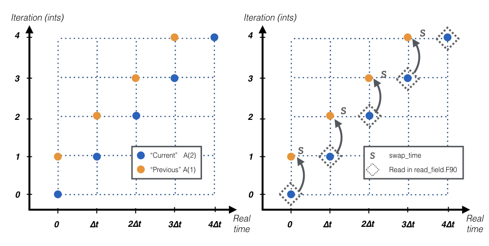
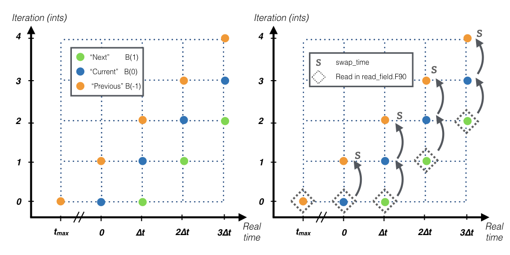
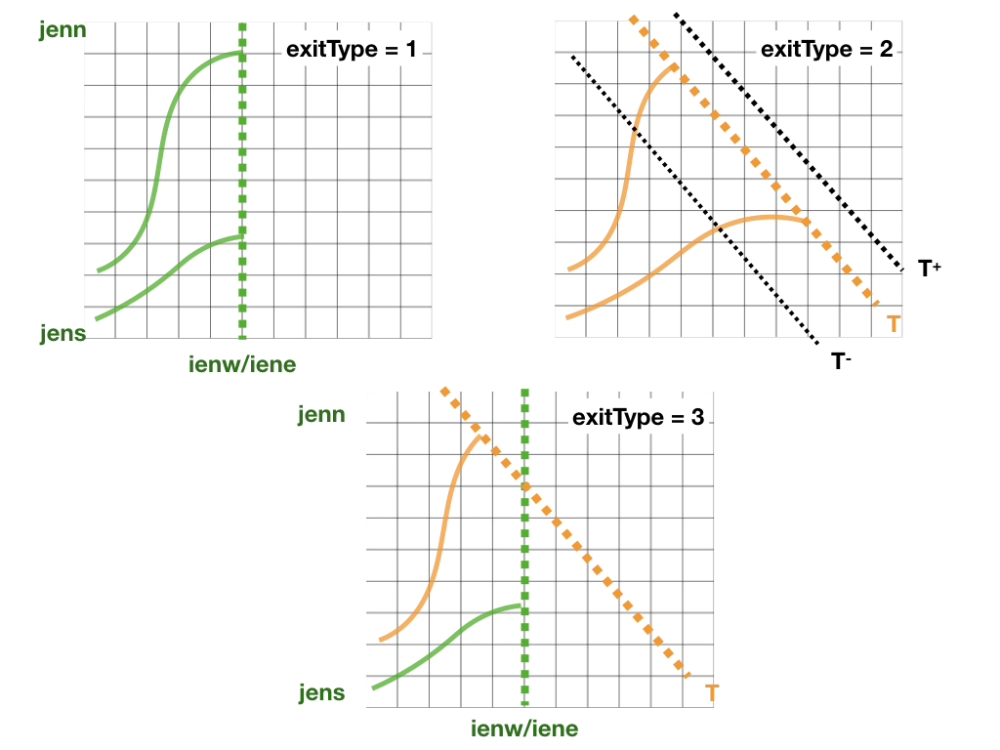

The present chapter will introduce all the files in the projects folder. Currently four projects are available: Theoretical, NEMO, AVISO, IFS, ROMS.
setup_grid.F90
This subroutine defines all the variables linked to the grid such as the horizontal resolution or the grid area. The following variables are initialised in this subroutine:
-
dxdy [mandatory]: the area of horizontal cell-walls.
-
dxv: size of the zonal wall computed in V points.
-
dyu: size of the meridional wall computed in U points.
-
kmt: number of vertical level from surface to bottom topography.
-
dzu: size of the vertical wall computed in U points.
-
dzv: size of the vertical wall computed in V points.
-
dzt [mandatory]: size of the vertical wall computed in T points.
dzt is a mandatory variable that needs to be defined either in setup_grid.F90 or in read_field.F90.
read_field.F90
This subroutine reads velocities and optionally some tracers from netCDF files and computes the mass/volume fluxes for TRACMASS.
There are two kind of variables that are stored at different time steps: 2-step variables and 3-step variables:
- The 2-step variables are those used to compute the time interpolation in between two time steps. These variables include all the mass/volume fluxes, tracer values, grid mass/volume tendecies, or scale factors. These variables have two time steps that represent: the “previous” time step (1) and the “current” time step (2). The data is read and stored in index 2, in the following time step the subroutine swap_time will reassign the former “current” time step into the new “previous” time step.

- The 3-step variables are those used to compute the mass/volume change dzdt. These variables include the size of the vertical grid dzt, surface boundary hs, or the tracer value tracertraj. These variables have there time steps that represent: the “previous” time step (-1), the “current” time step (0), and the “next” time step (1). The data is read and stored in index 1, in the following time step the subroutine swap_time will reassign the former “current” time step into the new “previous” time step, and the former “next” into the new “current” time step. In the first iteration of TRACMASS (ints equals to zero) the three time steps are read.

The following variables are initialised in this subroutine:
-
uflux [mandatory, 2-step variable]: zonal volume/mass flux.
-
vflux [mandatory, 2-step variable]: meridional volume/mass flux.
-
dzt [mandatory, see warning in setup_grid, 3-step variable]: size of the vertical wall computed in T points.
-
dzdt [2-step variable]: time derivate of the vertical grid.
-
tracers(:)%data [2-step variable] and tracertraj [3-step variable]: tracer values if l_tracers is TRUE.
kill_zones.F90
This subroutine defines the limits of the domain. If a trajectory is outside the domain the subroutine will identify it with a flag (nend). nend = 0 is reserved to the time exceeding case and nend = 1 is reserved to the trajectories reach the surface (z1 == km).
There are four types of killing zones defined by exitType :

-
exitType=1 : killing zone defined by a geographical domain given by [ iene, ienw ]x[ jens, jenn ]. If a trajectory is within those indexes it will be terminated.
-
exitType=2 : killing zone defined by a tracer value tracere. If maxormin = 1 (-1) the isoline is the maximum (minimum) value of the tracer.
-
exitType=3 : killing zone defined by both a geographical domain and tracer isolines.
-
exitType=4 : the killing zone is hard coded by the user.
Makefile.prj
This makefile sets the chosen pre-processing options. Before compiling the main program make sure to check the pre-processing options.
This is a list of the current pre-processing options:
| Compilation flag | |
|---|---|
| time_analytical | Turn on time analytical scheme |
| w_2dim | Turn off vertical fluxes |
| w_3dim | Compute 3D vertical velocities |
| w_explicit | Read 3D vertical velocities from input files |
| no_netcdf | Run TRACMASS without netcdf libraries |
| A_grid | Original dataset on a A grid |
Namelist
Many variables at TRACMASS can be modified using the namelist without the need to recompile the program. Each project has a namelist_CASE.in in the project folder. When TRACMASS is compiled a copy of the namelist (namelist.in) can be found in the main TRACMASS directory.
The list of all the variables that can be changed in the namelist and their corresponding group can be found in the section Namelist.